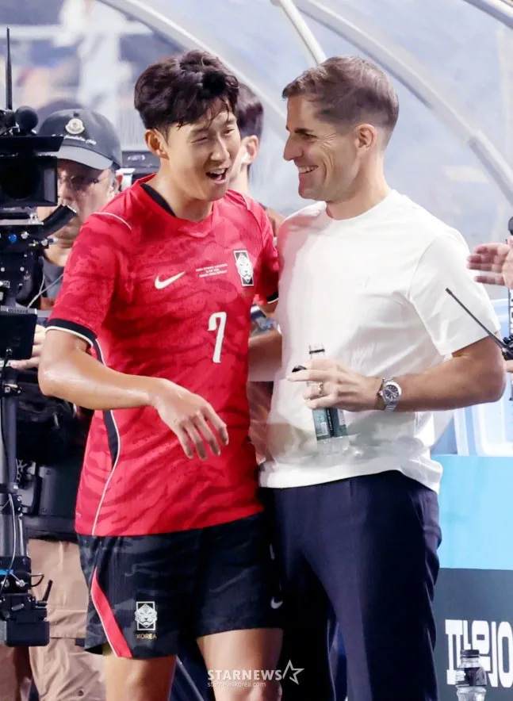
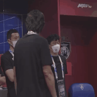

그 동안 어디서 똥구릉내 나는 물만 마시다가
갑자기 천연암반수를 얼음물로 시원하게 마신 표정이네 ㅋㅋ

그 동안 어디서 똥구릉내 나는 물만 마시다가
갑자기 천연암반수를 얼음물로 시원하게 마신 표정이네 ㅋㅋ
아시안컵 기대해도 되나
존나 많은 게 담겨있는듯한 표정으로 찍혔네 씹ㅋㅋㅋㅋㅋㅋㅋㅋㅋㅋㅋㅋ
그... 한국 군인인데 미국 군인의 라이플에 도트사이트 달려있는거 쏴보면서
와~~ 이거 죽이는데??!
딱 그 동영상에 나오는
신세계를 영접한 그 표정하고 똑같네요^^
로베르또 감독하고 손!!
화이팅!!!
아니 시발 딱 그거네 ㅋㅋㅋ
“이제야 말이통하네 ㅋㅋ”
월드컵까지는 힘들수 있으니 아시안컵 우승이라도 시켜줘 ㅠ
꺼어어어어어어어어어억


손원사 사진다음으로 커뮤에 자주 보일 손흥민 사진